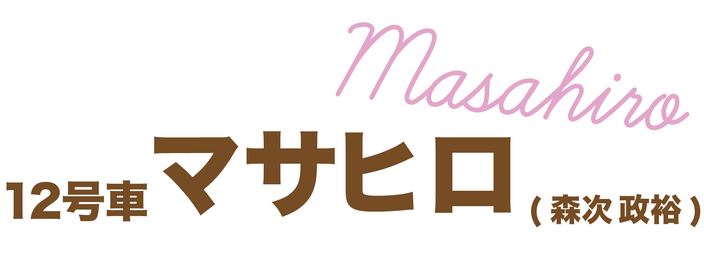

- ポジション：メインダンサー
- 担当：ごはん担当
- イメージカラー：ブラウン
- 1998・09・15
メンバーの食事時間・場所を管理する絶対的ごはん担当!
力強いパフォーマンスで超特急のダンススキルを底上げしてくれる存在
意外とボケ担当だったりする天然系野球男児
オーディションで加入したダンサー1人目のマサヒロくん！みんなから「マーくん」と呼ばれて親しまれています！
担当の理由は単純に「ご飯が好きだから」です！笑笑 いつでもどこでもお腹が空いているらしく、ライブ直前でも大盛りのご飯を食べるみたいです笑
そしてタイトなスケジュールの中でご飯を食べる時間を見出し、メンバーに食事時間を促すガチのご飯担当もしています。
この担当のこだわりは「ごはんはひらがな表記」であることです。みなさんもぜひ覚えてください
超特急に加入する前は、ダンサーとして活動していました。しかもマーくんが本格的にダンスを始めたのは18歳の高校卒業して地元の山口から上京してから! 圧倒的なセンスを持っています。
そして加入前に超特急のバックダンサーとしてライブに参加したり、振り動画のメンバー担当を行なっていたことがきっかけでオーディションに参加し、晴れて超特急のメインダンサーとなりました。
学生時代はずっと野球をしていたことからも運動神経が良くて、スポーツ企画でいつも大活躍しています！
そんなマーくんのダンスは誰が見ても上手いと思うキレキレのパフォーマンスが魅力です！ ダンス歴は浅いながらも癖がなく、どんな系統の曲にも馴染む表現力と適応力を兼ね備えています！
メインダンサーの中では教える方にも長けていて、メンバーに教えている場面が多かったり、ダンスの振りを教えてくれるレッスン配信もよくしています。
バチバチのパフォーマンスで魅せてくれるクールな雰囲気のマーくんですが、普段は結構天然が入ってたり、不思議系のボケ担当だったりします笑
メンバーから「基本別世界にいる」だったり、シンプルに「変」と言われたりしています。そのふわっとした性格もギャップの一つです。
天然系のキレキレダンサー・マサヒロくんの魅力に沼ってみては！！
公式の紹介ビデオです！
マーくんのメイン曲！最後のカウントダウンは何回見てもかっこいいです、、、
こちらもマーくんのセンター曲！
バチバチのダンス曲でマーくんの個性がとても出ています！
Youtubeチャンネルのおすすめ動画!超仲良しのシューヤ×マサヒロの"チャーはん"コンビ旅行Vlog！
この2人は仲良すぎて一緒にラジオ配信したり、高頻度で旅行に行ってます
マサヒロもとい「マユカ」大活躍です笑笑